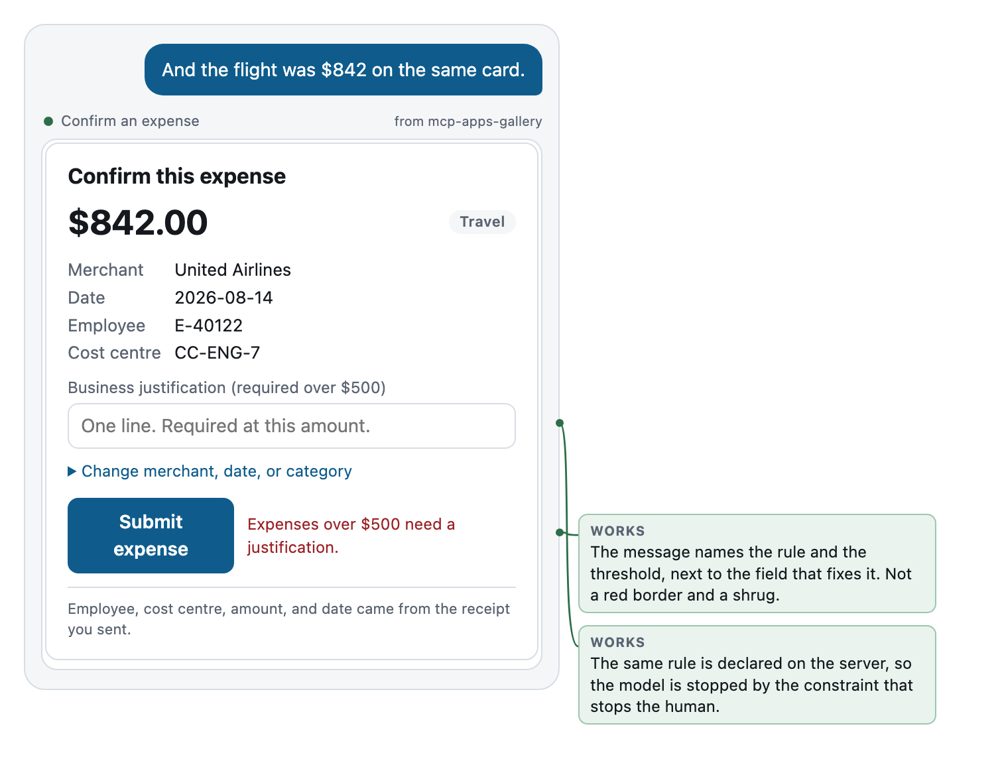
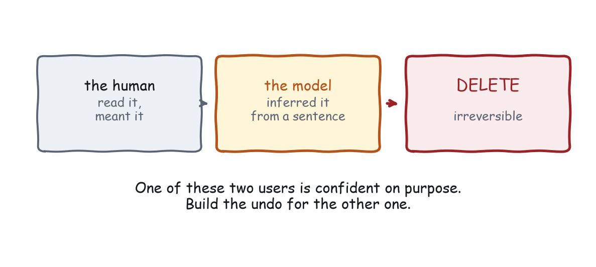

Chapter 9
Forms and Actions
The humbling case for plain elicitation, validation for two users, consent without nagging, and undo when the model pressed the button.
This is the chapter with the most code in it, because forms are where most MCP Apps end up, and because forms are where the two-user problem stops being philosophy and starts being a bug report.
We start with the case that should worry you.
The humbling case
Core MCP can already ask the user a structured question without any app at all.
The server sends an elicitation as part of a tool call. In revision 2026-07-28 this rides on the multi round-trip request mechanism, which exists so the server does not need a socket or a sticky session to wait for an answer. The host renders the question, in its own components, with its own styling, accessibility, keyboard handling, and consent flow. You provide a schema. You get an answer back.
That path is free, works in every host that speaks core MCP, is consistent with every other prompt the user has seen, and inherits accessibility work you did not do.
Your custom form has to be better than that. Sometimes it is. Often it is not.
Elicitation wins when the question is short, the fields are independent, the values are simple, and there is nothing to show the user while they answer. Three text fields and a dropdown is an elicitation. Stop building.
Your app wins when at least one of these is true:
- Seeing the data matters. The user is choosing among things they need to look at.
- The fields interact. Changing one changes what the others should say, and showing that live is the point.
- There is a preview. The user needs to see the consequence before they commit.
- Direct manipulation is faster than typing. Dragging a bar beats typing four numbers that must add up.
Notice what is not on that list: branding, familiarity with your product, and the fact that you already have the components. Those are reasons your team wants an app. They are not reasons your user needs one.
Run this test honestly once and you will delete something. That is the chapter doing its job.
Validation for two users
Assume you passed the test and you are building the form. Now you have two users who both need to be stopped from doing the wrong thing, and they need to be stopped in different languages.
The model is stopped by the schema. Types, enum, required, exclusiveMinimum, format. These are read before the call, so a well-declared schema prevents the bad call instead of rejecting it.
The human is stopped by a message. In place, next to the field, in words, saying what the rule is and how to satisfy it.
Both must be enforced by the server, because the app is a client and clients lie. Not out of malice, usually. Out of being an older version.
The failure mode is having those three in three places, written by three people, disagreeing. So: one rule, three renderings, derived from one statement of it.
Here is the gallery’s version. The rule is “expenses over $500 need a justification”. In the schema:
inputSchema: {
type: "object",
required: ["amount", "merchant", "date"],
properties: {
amount: { type: "number", exclusiveMinimum: 0 },
justification: { type: "string" },
// ...
},
}In the server handler, where it is actually enforced:
run(args) {
if (args.amount > 500 && !args.justification) {
throw new Error("Expenses over $500 require a justification.");
}
// ...
}And in the app, where it is explained:
function validate() {
if (!(draft.amount > 0)) return "Amount must be greater than zero.";
if (draft.amount > 500 && !document.getElementById("just").value.trim()) {
return "Expenses over $500 need a justification.";
}
return "";
}Three appearances, one sentence, same threshold. If the threshold changes, three lines change, and a test catches you if you miss one.

Two things in that figure are worth stealing.
The message names the rule and the threshold, and sits next to the control that fixes it. Compare it to a red border, which tells the user something is wrong and nothing else, or a toast, which tells them something is wrong and then leaves.
And the label changed before the error appeared. At $62 the field reads Business justification with the placeholder One line, optional. At $842 it reads Business justification (required over $500). A field labelled optional that then refuses to submit has told the human one thing and the server another, which is a small betrayal that people remember.
Errors that the model can use
One more audience for your error messages, and it is the one that will actually retry.
When a tool call fails, the model reads the failure. It then decides whether to try again, try differently, or tell the user. What it decides is determined entirely by what your message says.
Compare:
Error: validation failedExpenses over $500 require a justification. Call submit_expense again
with a `justification` string describing the business purpose.The first produces an apology to the user. The second produces a fixed call. Writing the second one costs nothing and turns a dead end into a recovery.
Two mechanical notes. Tool failures belong in the result, with isError: true, not as JSON-RPC protocol errors, because the model is supposed to read them. And say what to do next, not just what went wrong: an error message is an instruction to the second user.
Destructive actions in a consent medium
Now the sharp end.
Your app can call tools. Some of those tools delete things. And the button that triggers them can be pressed by a human who read the screen, or by a model that inferred intent from a sentence.

The instinct is to add a confirmation dialog. The instinct is half right. The question is what the confirmation is for.
A confirmation that says “Are you sure?” is not a safety mechanism. It is a speed bump that the user learns to jump in about four repetitions, and after that it is worse than nothing, because it creates a sense of protection that no longer exists.
A confirmation is only worth showing if it tells the user something they did not already know. Which means it names the specific thing, and the specific consequence:
Delete
orders-2026-prod? 4.2M rows. This cannot be undone.
versus
Are you sure you want to delete this item?
The first is worth reading, and people do. The second trains people not to read the first.
Three rules for destructive actions here:
Name the object and the scale. “This item” is not a name. “4.2M rows” is a scale.
Say whether it is reversible, honestly. “This cannot be undone” is information. If it can be undone, say that instead and stop pretending it is dangerous, because crying wolf costs you the one time it matters.
Do not put a destructive action next to a frequent one. Krug’s version was about misclicks. Here it is worse: the model might call the tool directly, and proximity in your UI often becomes proximity in your naming, and confusable names are a real source of wrong tool calls.
The confirmation, written out
Copy is design here, so here is the copy, for a confirmation that has to earn a read.
Void expense EXP-40122?
$842.00 to United Airlines, filed 14 August, already approved by Dana Okafor. Voiding notifies Dana and removes it from the August close.
[ Void it ][ Keep it ]
Four things it does that “Are you sure?” does not.
It names the object, with enough detail to recognise the wrong one. If the model picked the flight when the user meant the coffee, that is visible in the first line.
It states the blast radius. Somebody else finds out. Something else changes. Those are the facts that turn a reflex into a decision.
Its buttons say what they do. Not OK and Cancel. A user who reads only the buttons still gets it right, and a lot of users read only the buttons.
It does not shout. No red banner, no warning triangle. The information is the warning. Decoration on top of information reads as decoration, and people learn to skip decoration.
Where does the confirmation live? Two options, and the choice matters.
Inside the widget, when the widget is already on screen and the action came from a button in it. In its own render, when the action came from the conversation: the model called void_expense, the host is about to run it, and a card that summarises it before it happens is the whole interface.
The second case is the one people forget to build, and it is the one where the model, rather than the human, chose the object.
Undo, when the model pressed the button
This is the requirement the second user creates, and it is the one most teams have not thought about.
On the web, the person who clicked the button read the button. Here they may not have. The model called submit_expense because the user said “yeah, file it”, and the model’s interpretation of “it” was an inference.
Inferences are usually right. Usually is not a safety property.
So: for every tool that changes something, ship the tool that changes it back. Not a preference. A design requirement created by the fact that one of your users is a probabilistic system acting on a human’s behalf.
The gallery does this. submit_expense has a sibling:
{
name: "void_expense",
description: "Reverse a submitted expense.",
inputSchema: {
type: "object", required: ["expenseId"],
properties: { expenseId: { type: "string" } },
},
}And the successful result says so, to both users:
app.setContext(
"Expense EXP-40122 submitted: $62.40 at Blue Bottle Coffee on 2026-08-14. " +
"Reversible with void_expense.",
{ expenseId: "EXP-40122", amount: 62.4, undoTool: "void_expense" }
);The human sees Ask me to void it if that was wrong. The model sees the tool name. When the user says “no, wait, that was the personal card”, the recovery is one turn and no apology.
When something genuinely cannot be undone, the design changes shape. Then the confirmation is the only line of defence and it has to earn its place: name the object, state the scale, say plainly that it is permanent, and put the burden on the click rather than on a checkbox nobody reads.
Four failures, one form
Everything above, applied to the same widget. These are the four things to look for in review, in the order they bite.
Failure one: fields the model could have filled. Chapter 4’s law. Count the fields, count the genuinely unknown values, and if those numbers differ, fix the schema rather than the layout.
Failure two: validation the human sees and the model does not. Inline messages, empty schema. The model then calls with values your UI would have rejected, the server throws, and the user watches the assistant fail at something they were about to do correctly.
Failure three: submission the model never hears about. The form posts, the widget shows a tick, and nothing is written back. Three turns later, “did that go through?” and nobody knows. One setContext call, at the moment of success, with the identifier in it.
Failure four: an action with no way back. Covered above. The question in review is not “is there a confirmation”, it is “what does the user say to undo it, and does that work”.
Fix all four and the form in Figure 4-2 is what you get: four assumptions shown, one question asked, one rule stated before it is enforced, one result written back, and one sentence telling both users how to reverse it.
Latency, and the button that lies
Actions in this medium are slow in a way web forms are not. A click becomes a postMessage, a host decision, possibly a consent prompt, a network call, and a response. Half a second is optimistic. Two seconds happens.
Which makes the pressed state a design surface rather than a detail.
Disable on press, immediately. Double submission is a real failure here, because the round trip is long enough for a person to press twice.
Say what is happening, in the button. Submitting… beats a spinner beside it, because the user is already looking at the button.
Keep the form readable while it is in flight. Do not blank the fields, do not overlay the card. If it fails, the user needs to see what they were submitting.
Handle the consent prompt case. The host may put a dialog in front of the user, and your app finds out nothing until they answer. Your pressed state might sit there for ten seconds while somebody reads a permission dialog. It should still look sane at second nine, which rules out anything that animates impatiently.
And on failure, restore the state and say what happened in place. A toast that appears and leaves is worse than useless here, because the widget it was describing is still on screen looking unchanged.
What to remember
Check whether a plain elicitation beats your form, and accept the answer. Write the rule once and render it three ways: schema for the model, message for the human, enforcement on the server. Make error messages instructions rather than verdicts. Confirm only when the confirmation carries information. And ship the undo, because one of your users pressed the button on an inference.
Next chapter: the part where your widget spends trust that belongs to everybody.